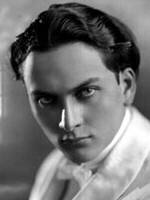
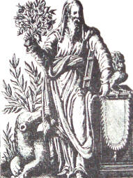
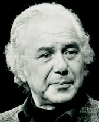

|
Mystery Traditions An important part of ancient Greek culture were the mystery cults, into which many Greek philosophers were initiated. These cults developed impressive rituals that involved fasting, purification, song and dance, the use of mythology and poetry. It is said that Greek drama developed from these rituals. Many authors have written about the enormous impact these initiations have had upon their understanding -- although the specific nature of the rituals has still remained a secret. Doubtless profound states of consciousness developed. The rituals of the Eleusinian mysteries dealt with the myth of Persephone, the daughter of Ceres, who was abducted by Pluto, Lord of the Underworld, who forced her to become his queen. Ceres entered the Underworld in search of her daughter and at her request Pluto agreed to allow Persephone to live in the upper world half of the year if she would stay with him in the darkness of Hades for the remaining half. Of this ritual, Manly Palmer Hall states:  Manly P. Hall, founder, Philosophical Research Society It is probable that the Eleusinians realized that the soul left the body during sleep, or at least was made capable of leaving by the special training which undoubtedly they were in a position to give. Thus Persephone would remain as the queen of Pluto's realm during the waking hours, but would ascend to the spiritual worlds during periods of sleep. The initiate was taught how to intercede with Pluto to permit Persephone (the initiate's soul) to ascend from the darkness of his material nature into the light of understanding.The fact that initiates maintained they had conquered the fear of death leads one to surmise that these rituals -- akin, perhaps, to the cave rituals of prehistoric humans -- developed a state we now call the out-of-body experience. Pythagoras, Plato and other Greek philosophers were said to have been initiated into these cults -- which are said to have originated in Egypt. The tradition of Hermetic mysticism also claims an origin in the legendary Egyptian-Greek god-sage Hermes Trismegistus.
Oracles The first recorded controlled parapsychological experiment took place in ancient Greece during the sixth century B.C. Greece was at that time famous for its oracles which were generally connected with the temples of the various gods. Generally these oracles operated through a priestess or medium who went into a trance or became possessed by the god of the oracle and uttered prophetic words which were then interpreted by the priests. Their enormous prestige and political influence was attested to by kings and generals who would consult with these oracles before making major decisions. Herodotus, the Father of History, reports that the King of Lydia, Croesus, wishing to test the different oracles, sent messengers to those of Aba, Miletus, Dodona, Delphi, Amphiaraus, Trophonius, and Jupiter Ammon. His idea was by this means to choose the best of them to consult about his proposed campaign against the Persians. On the hundredth day after their departures all of the messengers were to simultaneously ask the oracles to tell them what Croesus was doing at that very moment. Accordingly, on the day appointed, when the emissaries had entered the temple of Delphi, even before they had time to utter their mandate, which had been kept secret, the priestess said in verse: I count the grains of sand on the ocean shoreThis reply was committed to writing and rushed back to Croesus who received the lines of the priestess with utmost veneration. On the appointed day he had sought for something impossible to guess: having caused a tortoise and lamb to be cut into pieces, he had had them cooked together in a brass pan upon which he had afterwards placed a lid of the same metal. The oracle of Amphiaraus also proved lucid in this experiment; others were less definite. The presents that Croesus sent to Delphi were of incalculable value. A detailed list may be found in Herodotus. Out of this cultural milieu developed a
philosophical tradition that was hylozoistic, conceiving of nature as animated
or alive; ontological, inquiring into the very essence of things; and monistic,
seeking to find a single principle to explain all phenomena. Now, we will
explore the theories of mind and consciousness promulgated by the ancient
philosophers. Note that their teachings consistently emphasized a unity
between the goals of philosophy and the practices of living. Such a unity
of thought and action is sadly deemphasized in the contemporary quibbling
of much modern academic philosophy.
Pythagoras  Pythagoras Pythagoras -- a great mystic who is also regarded as the father of the western scientific tradition -- did not begin to teach until the age of forty. Until that time he studied in foreign countries with the resolution to submit to all of his teachers and make himself a master of their secret wisdom. We are told that the Egyptian priests with whom he studied were jealous of admitting a foreigner into their secrets. They baffled him as long as they could, sending him from one temple to another. However, Pythagoras endured until he was rewarded accordingly for his patience. Later on he was no less strict in dealing with his own disciples. Pythagoras proposed philosophy as a means of spiritual purification. He suggested the heavenly destiny of the soul and the possibility of its rising to union with the divine. He claimed that he could personally hear the "music of the heavens," and he generally allowed his followers to believe that he was the Hyperborean Apollo and that he assumed a human form in order to invite men to approach him. When one examines the scope of his profound scientific and philosophical contributions, @hese metaphors seem almost apt. Twenty-five hundred years later we can recognize Pythagoras as a being of rare visionary power. Scholars suggest that he incorporated the ecstatic practices of the Orphic mystery cult, known for its raw emotional manifestations -- which he attempted to reform with his emphasis on knowledge and science as a path to salvation. During the novitiate period of five years, a vow of strict silence was required. Only then were disciples permitted to participate in intellectual discourse with the master. Members of the Pythagorean brotherhood held their goods in common, made fidelity chief virtue and held that the best should rule. That Pythagoras was indeed a shaman is a credible notion. Among the many threads woven into the fabric of his philosophy are the shamanistic cult practices of Thracaan medicine men. He also claimed to have full memory of the many forms he had taken in past incarnations. The Pythagorean brotherhood formed a direct link between the mystery school tradition and the development of Greek philosophy. Pythagoras is credited with inventing the Western musical scale and the theorem by which the length of the hypotenuse of a right triangle is derived. His philosophy was looked upon as mystical since he stressed the harmonious development of the soul within humanity. (He also taught the doctrine of the transmigration of the soul through successive incarnations.) Relationships between all things could be expressed by numbers which took on qualitative properties that were analogous to the qualitative differences found in musical harmonies. The Pythagoreans devoted themselves to studying the countless peculiarities discoverable in numbers, and ascribed these to the universe at large. Numbers were thus seen as a principle that linked the symbolic properties of the mind with the mechanisms of the universe. It is precisely this Pythagorean notion that forms the backbone of the theoretical models of consciousness which will be presented in Section IV and, in greater detail, as a work-in-progress in the Appendix. For the most ancient of all philosophical-scientific traditions relating consciousness and reality may yet prove the most fruitful. If so, it would not be the first time that Pythagorean concepts have demonstrated extraordinarily penetrating insights. Pythagoras was the first to suggest that the earth was a spherical planet orbiting the sun. The origin of human consciousness was understood in the context of this astronomy. One of the most influential concepts developed by the Pythagoreans was the notion of the harmony of the spheres, which related the inner states of the mind to a contemplation of these celestial spheres. Before the beginning of reflective thought, man feels, in various contexts, an involvement. He unconsciously arranges the multiplicity of phenomena into a restricted number of schemata. It is the business of reflection, when it begins, to raise these transitory insights into the realm of consciousness, to name them, and to assimilate them to one another. This is how the world becomes comprehensible. In myth and ritual man tries to make these realizations present and clear, to assure himself that, in spite of all confusion and all the immediate threats of his environment, everything is "in order." It is in such a prescientific conception of order that the idea of cosmic music has its roots; and number speculation springs from the same soil. But relationships that usually have their
effect unconsciously, or only enter consciousness as the result of slow
and patient reflection, become immediate, overwhelming experiences in ecstasy.
The soul that in ecstasy, or dream, or trance, travels to heaven, hears
there the music of the universe, and its mysterious structure immediately
becomes clear to him. The incomparable and supernatural sound is part of
the same thing as the incomparable beauty and colorfulness of other worlds.
If Pythagoras was something like a shaman, who in ecstasy made contact
with worlds "beyond," then the tradition that he personally heard the heavenly
music surely preserves something of truth.
Democritus In contrast to Pythagoras, Democritus, the originator of atomic theory, was more concerned with the substance of the universe than with its form. He maintained that the soul is composed of the finest, roundest, most nimble and fiery atoms. These atoms cannot be seen visually, but can be perceived in thought. At death, Democritus maintained in a book called Chirokmeta, that soul molecules detach themselves from the corpse, thus giving rise to spectres. Through this theory, Democritus also attempted to explain dreams, prophetic visions, and the gods. Democritus held that objects of all sorts,
and especially people continually emitted what he termed images -- particles
on the atomic level that carried representations of the mental activities,
thoughts, characters and emotions of the persons who originated them. "And
thus charged, they have the effect of living agents: by their impact they
could communicate and transmit to their recipients the opinions, thoughts,
and impulses of their senders, when they reach their goal with the images
intact and undistorted." The images "which leap out from persons in an
excited and inflamed condition," yield, owing to their high frequency and
rapid transit, especially vivid and significant representations.
Socrates Socrates, who left no writings of his own, remains an enigma. Regarded by many as possibly the wisest man who ever lived, he has developed a more recent reputation as something of a protofascist, rabble rouser. I see him as a role model for the exploration of consciousness presented herein because he spoke freely about his experiences. His honesty was profoundly respected by all who knew him -- in fact his life was a model of integrity which inspired many philosophers. The Socratic injunction of Know Thyself provides a basic impulse for the work in this book. Socrates' life bridged the gap between the spirit and the intellect. Most people would agree that he is one of the greatest philosophers; and yet he never left any writings whatsoever. Jacob Needleman, professor of philosophy at San Francisco State University and author of The Heart of Philosophy, expressed the essence of Socrates' life and teaching in a Thinking Allowed television interview with me:  Jacob Needleman (courtesy Thinking Allowed Productions) He was a philosopher in the original sense of the term, which is a lover of wisdom. That is what the word means -- to love, to seek wisdom. Wisdom is a state of the whole human being. A person who is wise not only knows the truth, but can live it. The philosopher Socrates sought to be wise, not simply to know facts and propositions and ideas.Socrates, who himself was apparently gifted with precognitive perception, attributed his abilities to the aid of a personal daemon, which then meant demigod and not (evil) demon. In the Theagetes, Plato makes Socrates say: By favour of the Gods, I have, since my childhood, been attended by a semi-divine being whose voice from time to time dissuades me from some undertaking, but never directs me what I am to do. You know Charmides the son of Glaucon. One day he told me that he intended to compete at the Nemean games. I tried to turn Charmides from his design, telling him, "While you were speaking, I heard the divine voice. Go not to Nemea." He would not listen. Well, you know he has fallen.In his Apology for Socrates, Xenophon attributes to him these words: This prophetic voice has been heard by me throughout my life: it is certainly more trustworthy than omens from the flight or entrails of birds: I call it a God or daemon. I have told my friends the warnings I have received, and up to now the voice has never been wrong.
A great concern for exploring consciousness is expressed in the works of Plato, who was a student of Socrates. Plato maintains that the world of ideas itself is just as real as the world of objects, and that it is through ideas that humanity attains consciousness of the absolute. He compares our human condition to that of slaves enchained in a cave where one can only see the shadows of people and objects passing by outside. Eventually we come to accept these shadows as reality itself, while the source of the shadows is ignored. Such is our ignorance of the spiritual world in which our own ideas have their being. Plato also makes a distinction between mere augury, which tries to comprehend the workings of god through a rational process, and genuine prophecy -- such as that instanced by Socrates -- which utilizes inner voices, out-of-body experiences, inspired states, dreams and trances. Like Pythagoras, Plato admits the pre-existence of the nous,or divine soul of humanity, which chooses the existence for which it must incarnate. It survives the death of the body, and if it has not attained sufficient perfection to merit endless bliss, it must be subjected to new tests by reincarnating in order to attain further progress and perfection. In many other respects, particularly his emphasis on mathematics, Plato can be viewed as teaching in the Pythagorean tradition. In the last chapter of his masterpiece, The Republic, Plato vividly describes a vision of life after death attained by a young man named Er who was wounded in battle and thought to be dead. While this story is clearly augmented by the moralistic philosophy and cosmological views prevalent in his culture, Plato's account carries a ring that echoes the after-death mythology of many different visionaries, and was very likely derived from the lore of the mystery cults into which he was initiated. After the souls of the dead had received a thousand years of reward or punishment for the deeds of their previous lives, they are brought to a place where they choose their next incarnations. Reincarnation is necessary for the development of consciousness in order to... ...know what the effect of beauty is when combined with poverty or wealth in a particular soul, and what are the good and evil consequences of noble and humble birth, of private and public station, of strength and weakness, of cleverness and dullness, and of all the natural and acquired gifts of the soul.Plato taught that before each incarnation, the soul enters into a forgetfulness of what has gone before. The purpose of human learning and philosophy is, then, to reawaken in the soul remembrance of the eternal, spiritual realm of pure forms and ideas. Aristotle Plato's greatest student Aristotle is noted
for having turned away from the inner world of spiritual ideals Plato loved
towards a philosophy that was more rational and scientific. Instead of
describing the spiritual world as having greater reality then the physical,
he describes an entelechy or vital force urging the organism toward self-fulfillment.
He describes this urge as the ultimate and immortal reality of the body.
Aristotle also recognized in the stars embodied deities, beings of superhuman
intelligence.
Neoplatonism The Neoplatonic school, centered in Alexandria, combined mystical elements found in Judaism with Greek philosophy. Philosophers within this tradition sought to explain the world as an emanation from a transcendent God who was both the source and goal of all being. Philo Judaeus (30 BC-SO AD) described a process of mediation between god and humanity, in which the Jewish notions of angels and demons was equated with the world-soul or realm of ideas of the Greeks. Philo advocated using forms of asceticism in order to free oneself from the grip of sensory reality and enter into communion with spiritual reality. Similar doctrines were taught by Plotinus who insisted that union with god cannot be realized by thought even freed from the senses. This experience is possible only in a state of ecstasy in which the soul totally transcends its own thought, loses itself in the being of God and becomes one with divinity. The way in which the neo-Platonists probed into the magical workings of nature is reflected in the questions posed by the philosopher Porphery to his teacher Iamblichus: ...granted that there are Gods. But I inquire what the peculiarities are of each of the more excellent genera, by which they are separated from each other; and whether we must say that the cause of the distinction between them is from their energies, or their passive motions, or from things that are consequent, or from their different arrangement with respect to bodies; as, for instance, from the arrangement of the Gods with reference to ethereal, but of daemons to aerial, and of souls to terrestrial bodies?...These questions were all directed toward the operation of certain theurgical (magical) rites designed to evoke the powers of the gods to aid the philosophers. The neoplatonic philosophers did not consider
themselves the originators of a new school of thought. Rather, they felt
they were carrying on the tradition of Plato, However, they developed a
more active mysticism than is found in Plato himself, a mysticism which
was to carry a great influence on later hermeticists, alchemists, and cabalists.
References . Manley Palmer Hall, The Secret Teachings of All Ages. Los Angeles: Philosophical Research Society, 1973. A well-illustrated volume which may be somewhat distorted by Hall's tendency to romanticize about esoteric traditions. . Ceasare de Vesme, A History of Experimental Spiritualism, Vol 1, trans. by Stanley de Brath. London: Rider & Co., 1931. This scholarly work quotes Herodotus (i, 47-8). . The best available collection of ancient source materials related to Pythagoras is D. R. Fideler (ed.), The Pythagorean Sourcebook and Library: An Anthology of Ancient Writings which Relate to Pythagoras and Pythagorean Philosophy. K. S. Guthrie (trans.), Grand Rapids, MI: Phanes Press, 1987. . The myth of Orpheus travelling into the realm of the dead has been beautifully portrayed in two modern films, Orpheus and Black Orpheus. . For a detailed explication of Pythagorean number lore, see R. Waterfield (trans), The Theology of Arithmetic: On the Mystical, Mathematical and Cosmological Symbolism of the First Ten Numbers, Attributed to Iamblichus. Grand Rapids, MI: Phanes Press, 1988. . Walter Buckert, Lore and Science in Ancient Pythagoreanism, trans. by Edwin J. Minar, Jr. Cambridge, MA: Harvard University Press, 1972, p. 357. . E. R. Dodds, "Supernormal Phenomena in Classical Antiquity," Proceedings of the Society for Psychical Research, March 1971, p. 194. Since its inception, the SPR in Britain has been graced with gifted classical scholars, Dodds being among the most recent. . I. F. Stone, The Trial of Socrates. Boston: Little, Brown, 1988. . Jacob Needleman, Spirituality and the Intellect (#S032), in Living Philosophically (#Q374), videotapes available from Thinking Allowed Productions, Berkeley, CA. . Plato, The Republic, Book VII, trans. by B. Jowett, New York: Vintage. . Ernest G. McClain, The Pythagorean Plato: Prelude to the Song Itself. York Beach, ME: Nicholas-Hays, 1978. . Plato, The Republic, Book X, trans. by B. Jowett, New York: Vintage. . Frank Thilly, A History of Philosophy, rev.by Ledger Wood. New York: Henry Holt and Company, 1957. . Iamblichus on The Mysteries of the Egyptians, Chaldeans and Assyrians, trans. by Thomas Taylor. London: Bertram Dobell, 1895. |